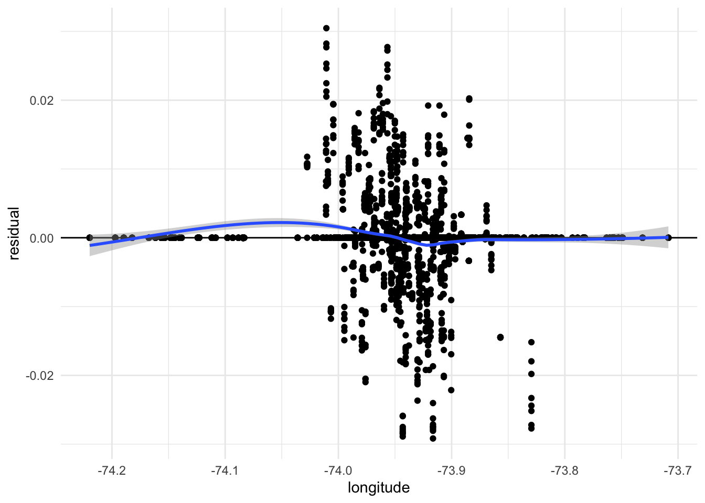
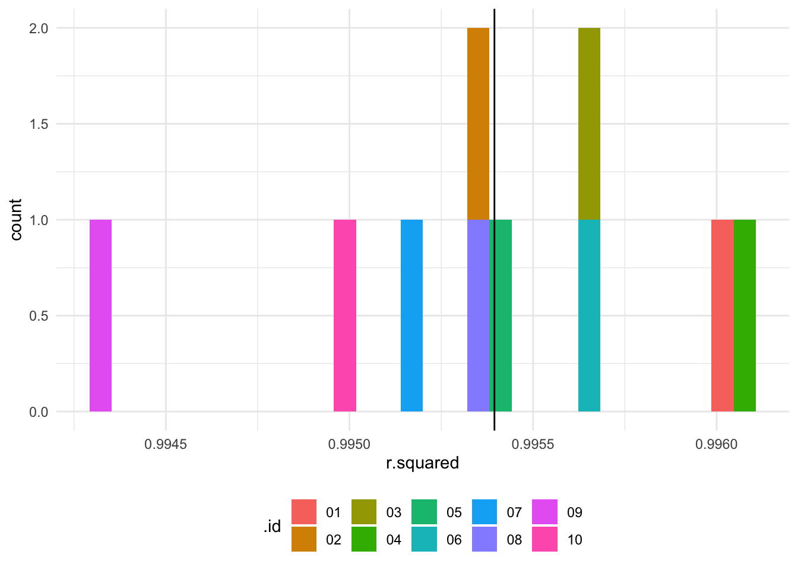
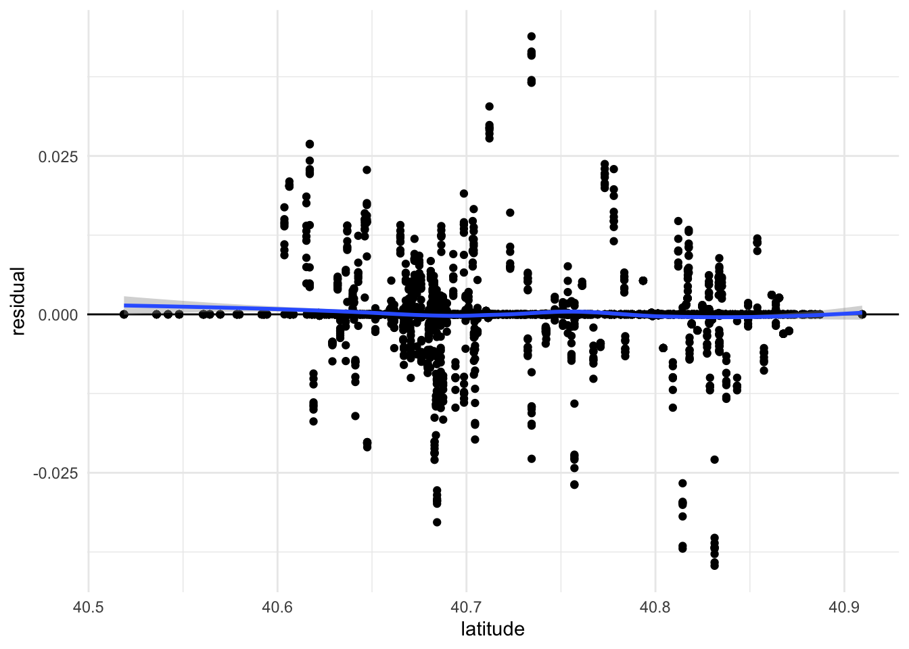

Regression
Load packages
library(tidyverse)
library(lubridate)
library(readr)
library("ggplot2")
library("dplyr")
library(xts)
library("lubridate")
library("RColorBrewer")
library("ggthemes")
library("gridExtra")
library("leaflet")
library("highcharter")
library(scales)
library(leaflet.extras)
library(modelr)
rats_raw <- read.csv("./Rat_Sightings.csv", na = c("", "NA", "N/A", "Unspecified")) %>%
janitor::clean_names() %>%
mutate(created_date = mdy_hms(created_date)) %>%
mutate(sighting_year = year(created_date),
sighting_month_num = month(created_date),
sighting_month = month(created_date, label = TRUE, abbr = FALSE),
sighting_day = day(created_date),
sighting_weekday = wday(created_date, label = TRUE, abbr = FALSE)) Clean data set more on the predictor variables that were googled through research to have the most effect on rat sightings, keeping borough and location type.
cleaner_rats <-
rats_raw %>%
drop_na(descriptor, location_type, incident_address, incident_zip,street_name, borough, latitude, longitude) %>%
select(unique_key, agency, descriptor, location_type, incident_address, incident_zip, street_name, borough,latitude, longitude) %>%
drop_na() %>%
janitor::clean_names()
cleaner_rats <- as.data.frame(unclass(cleaner_rats),stringsAsFactors=TRUE)
cleaner_rats
sample_1 <- cleaner_rats[sample(nrow(cleaner_rats), 500), ]Run a linear model on the cleaner data set to be able to see which predictor variables had the most impact on the model by looking at their P values.
model1 <- lm(latitude ~ borough + location_type + incident_zip + street_name, data = sample_1)
model2 <- lm(longitude ~ borough + location_type + incident_zip + street_name, data = sample_1)
summary(model1)
summary(model2)Simply run a kfold technique to have a training and testing data set, run a new linear regression model to see the effect on latitude using
set.seed(23)
cleaner_rats1 <-
sample_1 %>%
select(location_type, borough,incident_zip, street_name, latitude)
rats_folds <- crossv_kfold(cleaner_rats1, k = 10)
rats_folds <- rats_folds %>% mutate(model4 = map(train, ~ lm(latitude ~ ., data = .)))
rats_folds$model4[[1]] %>% summary()set.seed(23)
cleaner_rats2 <-
sample_1 %>%
select(location_type, borough, street_name, incident_zip, longitude)
rats_folds2 <- crossv_kfold(cleaner_rats2, k = 10)
rats_folds2 <- rats_folds2 %>% mutate(model = map(train, ~ lm(longitude ~ ., data = .)))
rats_folds2$model[[1]] %>% summary()This is the longitude prediciton
library(broom)##
## Attaching package: 'broom'## The following object is masked from 'package:modelr':
##
## bootstrapprediction <-
rats_folds2 %>%
mutate(predicted = map2(model, train, ~ augment(.x, newdata = .y))) %>%
unnest(predicted)## Warning: There were 10 warnings in `mutate()`.
## The first warning was:
## ℹ In argument: `predicted = map2(model, train, ~augment(.x, newdata = .y))`.
## Caused by warning in `predict.lm()`:
## ! prediction from a rank-deficient fit may be misleading
## ℹ Run `dplyr::last_dplyr_warnings()` to see the 9 remaining warnings.predictionWe compare by looking to residual
prediction <- prediction %>%
mutate(residual = .fitted - longitude)
prediction%>%
ggplot(aes(longitude, residual)) +
geom_hline(yintercept = 0) +
geom_point() +
stat_smooth(method = "loess") +
theme_minimal()## `geom_smooth()` using formula = 'y ~ x'
We compare the R^2 and look at the residuals
rs <- prediction %>%
group_by(.id) %>%
summarise(
sst = sum((longitude - mean(longitude)) ^ 2), # Sum of Squares Total
sse = sum(residual ^ 2), # Sum of Squares Residual/Error
r.squared = 1 - sse / sst # Proportion of variance accounted for
)
rs %>%
ggplot(aes(r.squared, fill = .id)) +
geom_histogram() +
geom_vline(aes(xintercept = mean(r.squared)))## `stat_bin()` using `bins = 30`. Pick better value with `binwidth`.
Same process as above for the latitude
library(broom)
prediction2 <-
rats_folds %>%
mutate(predicted = map2(model4, train, ~ augment(.x, newdata = .y))) %>%
unnest(predicted)## Warning: There were 10 warnings in `mutate()`.
## The first warning was:
## ℹ In argument: `predicted = map2(model4, train, ~augment(.x, newdata = .y))`.
## Caused by warning in `predict.lm()`:
## ! prediction from a rank-deficient fit may be misleading
## ℹ Run `dplyr::last_dplyr_warnings()` to see the 9 remaining warnings.predictionprediction2 <- prediction2 %>%
mutate(residual = .fitted - latitude)
prediction2%>%
ggplot(aes(latitude, residual)) +
geom_hline(yintercept = 0) +
geom_point() +
stat_smooth(method = "loess") +
theme_minimal()## `geom_smooth()` using formula = 'y ~ x'
rs2 <- prediction2 %>%
group_by(.id) %>%
summarise(
sst = sum((latitude - mean(latitude)) ^ 2), # Sum of Squares Total
sse = sum(residual ^ 2), # Sum of Squares Residual/Error
r.squared = 1 - sse / sst # Proportion of variance accounted for
)
rs2 %>%
ggplot(aes(r.squared, fill = .id)) +
geom_histogram() +
geom_vline(aes(xintercept = mean(r.squared)))## `stat_bin()` using `bins = 30`. Pick better value with `binwidth`.